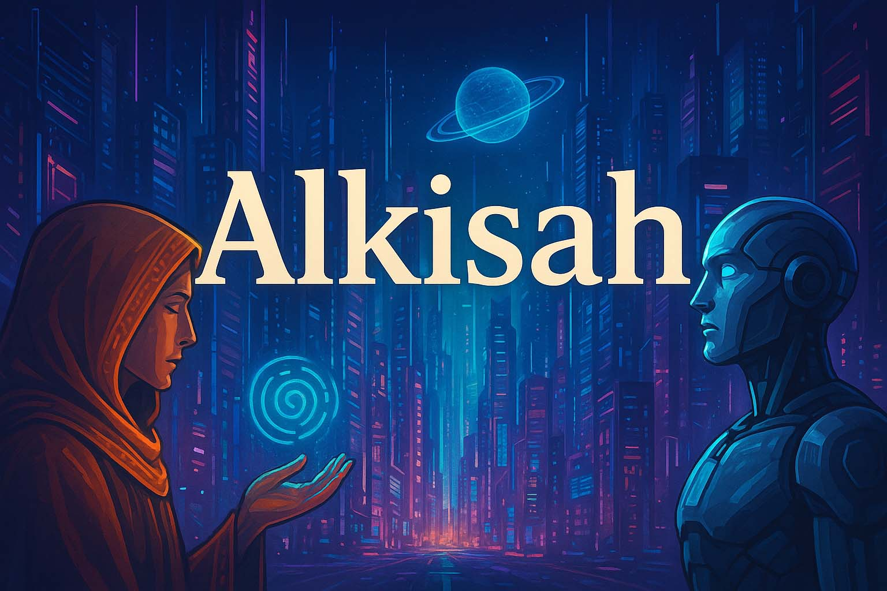

Galih OS.
IT Staff, web developer, technology enthusiast, blogger, dan vlogger. Berfokus pada pengembangan sistem berbasis web, troubleshooting, database, jaringan lokal, serta administrasi yang membutuhkan ketelitian dan solusi praktis.
About Me
Teknologi, administrasi, dan rasa ingin tahu menjadi bagian dari perjalanan profesional saya.
Problem solver dengan mindset teknologi.
Saya memiliki pengalaman dalam pengembangan website, sistem informasi, troubleshooting perangkat dan sistem operasi, database, serta local networking. Di luar pekerjaan, saya menikmati aktivitas menulis, blogging, dan eksplorasi teknologi.
Experience & Education
Beberapa pengalaman pengembangan sistem dan perjalanan pendidikan yang tercantum dalam CV.
Website-Based Information Development
SMA Wachid Hasyim 5.
Website-Based School Exam Application
SMA IPIEMS Surabaya.
Website-Based Information Development
Kindergarten Hospital III Brawijaya Surabaya.
Salary & Allowance Information System
Surabaya City Regional Financial and Tax Management Agency (Government).
Bachelor of Computer Science
Pendidikan formal di bidang ilmu komputer.
Basic Windows, Multimedia & Internet
Pelatihan dasar komputer, multimedia, dan internet.
Blog & Interests
Tempat berbagi cerita, teknologi, dan berbagai catatan personal.

Coretan Alkisah dalam Blogger
Seputar alkisah yang tersusun dan dibingkai secara humanize.
Coretan Sekolah Intelijen
Gambaran cerita dan coretan seputar dunia intelijen dan metode yang diterapkan.
Teknologi
Pembaruan dan pengetahuan seputar dunia teknologi konvensional maupun digital.
Let's connect.
Untuk mengenal dan mengetahui informasi lebih lanjut, silakan terhubung melalui kanal berikut.